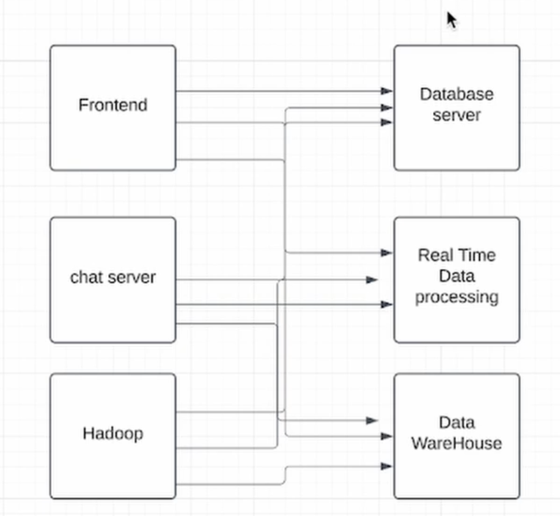
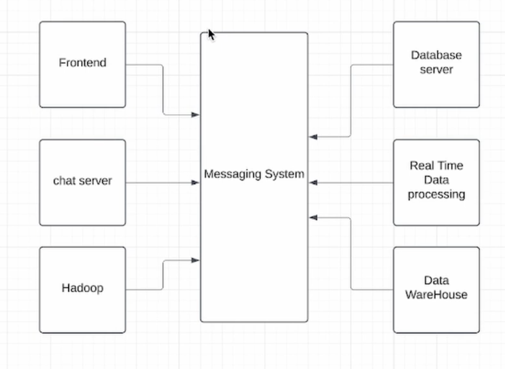
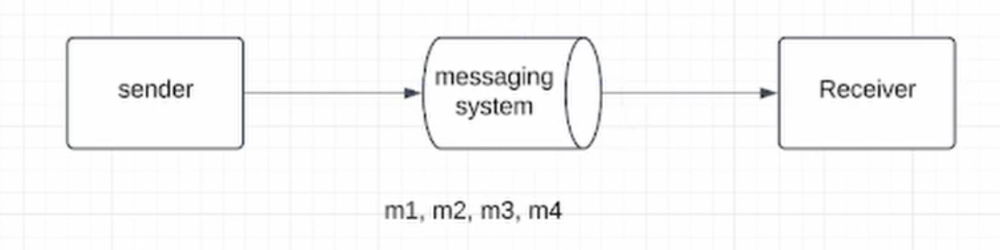
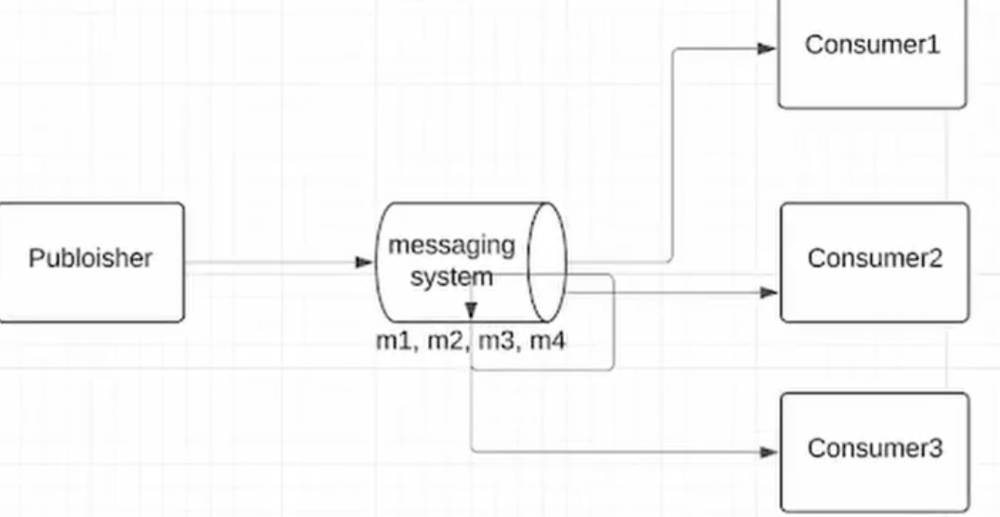
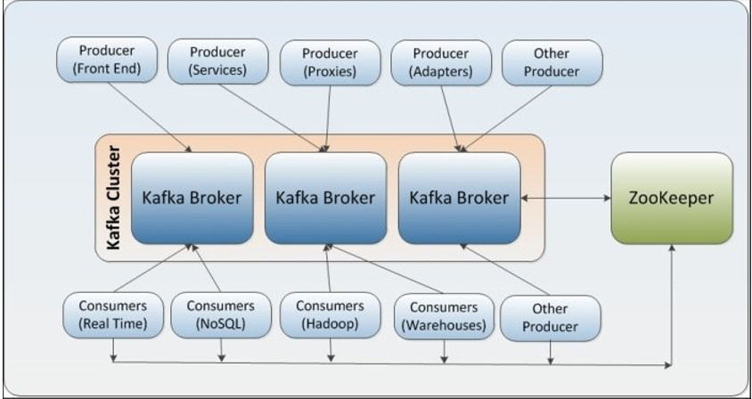
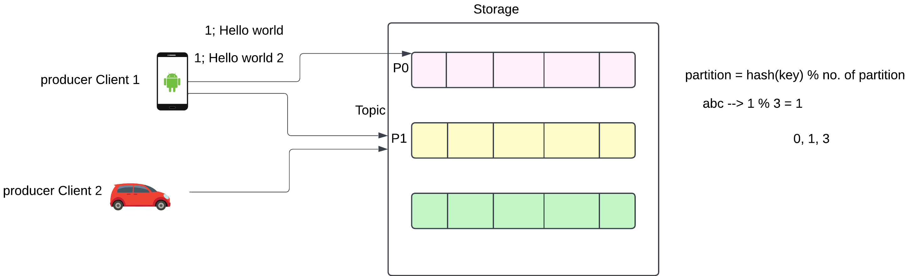
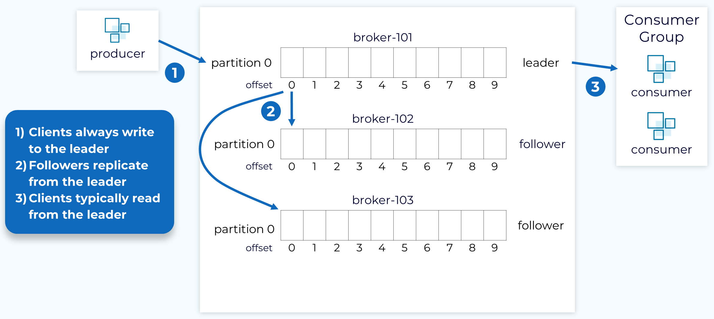

In this architecture, every service directly communicates with every other system. This creates a highly complex and tightly coupled system.

Here, all services communicate through a central messaging system. This removes direct dependencies and enables scalable, event-driven architecture.

In this model, a message is sent to a queue and only one consumer receives it.

In this model, a message is sent to a topic and multiple consumers receive it.


Download & Extract:
👉 Kafka Download : https://kafka.apache.org/downloads
tar -xvf kafka_2.13-3.7.0.tgz
cd kafka_2.13-3.7.0
Mac (Homebrew):
brew install kafka
Zookeeper:
bin/zookeeper-server-start.sh config/zookeeper.properties
Kafka Server:
bin/kafka-server-start.sh config/server.properties
bin/kafka-topics.sh --create \
--topic myLog \
--bootstrap-server localhost:9092 \
--partitions 3 \
--replication-factor 1
bin/kafka-topics.sh --list --bootstrap-server localhost:9092
bin/kafka-console-producer.sh \
--topic myLog \
--bootstrap-server localhost:9092
Example messages:
Hello Kafka
Learning Messaging System
bin/kafka-console-consumer.sh \
--topic myLog \
--from-beginning \
--bootstrap-server localhost:9092
Understanding Kafka becomes easier with a real-world analogy.
Zookeeper acts like the headquarters of the system. It manages and coordinates all Kafka brokers.
Just like McDonald's headquarters ensures all outlets are working properly and assigns work when one fails, Zookeeper ensures Kafka cluster stays healthy and consistent.
In Kafka, we don't just send simple messages. Instead, we send events. An event represents something that happened in the system.
An event in Kafka contains the following:
Key: order-123
Value: Order Created with amount ₹500
Timestamp: 2026-05-03T22:30:00
Kafka uses the key to decide which partition the event will go to. All events with the same key go to the same partition, which ensures ordering.
Suppose employee events are coming continuously, and you want to process them department-wise in order.
HR: Employee A joined
HR: Employee B promoted
IT: Employee C joined
IT: Employee D resigned
If you use department as key:
✔️ This ensures correct sequencing within each department.
❌ Without key → events may go to different partitions → order can break.
bin/kafka-console-producer.sh \
--topic myLog \
--bootstrap-server localhost:9092 \
--property "parse.key=true" \
--property "key.separator=:"
Send events:
HR:Employee A joined
HR:Employee B promoted
IT:Employee C joined
bin/kafka-console-consumer.sh \
--topic myLog \
--from-beginning \
--bootstrap-server localhost:9092 \
--property print.key=true \
--property print.timestamp=true
CreateTime:1714755600000 HR Employee A joined
CreateTime:1714755602000 HR Employee B promoted
CreateTime:1714755604000 IT Employee C joined
Let's understand Kafka concepts using a simple folder analogy.
A topic is like a folder where all related messages (events) are stored.
Each topic is divided into multiple partitions (subfolders).
Messages inside partitions are like files inside subfolders.
Each message has a unique offset (ID) within a partition.
Offset 0 → Message 1
Offset 1 → Message 2
Offset 2 → Message 3
❗ Ordering is guaranteed only within a partition, not across the entire topic.

A Kafka topic is divided into multiple partitions (P0, P1, P2). Each partition works independently and allows parallel processing.
Each partition stores data as an append-only log.
Partition → Log → Segments → Messages
Kafka creates new segments based on size or time.
Each message in a partition has a unique offset (position).
Offset 0 → Employee A joined
Offset 1 → Employee B promoted
Offset 2 → Employee C resigned
✔️ Consumer reads messages using offset and can resume from last position
Kafka calculates partition using the message key:
partition = hash(key) % number_of_partitions
| Key | Hash % 3 | Partition |
|---|---|---|
| HR | 0 | P0 |
| IT | 1 | P1 |
| HR | 0 | P0 ✅ |
✔️ Same key always goes to same partition → maintains ordering
❗ Without key → messages distributed round-robin way → ordering not guaranteed

bin/kafka-topics.sh --create \
--topic myLog \
--bootstrap-server localhost:9092 \
--partitions 3 \
--replication-factor 3
Here we created a topic myLog with:
Replication factor means how many copies of each partition are stored across brokers.
✔️ More replicas → More reliability and fault tolerance
Each partition has:
Example:
If the leader goes down:
✔️ This is why Kafka is highly available
❗ Clients always write to leader, followers never accept direct writes